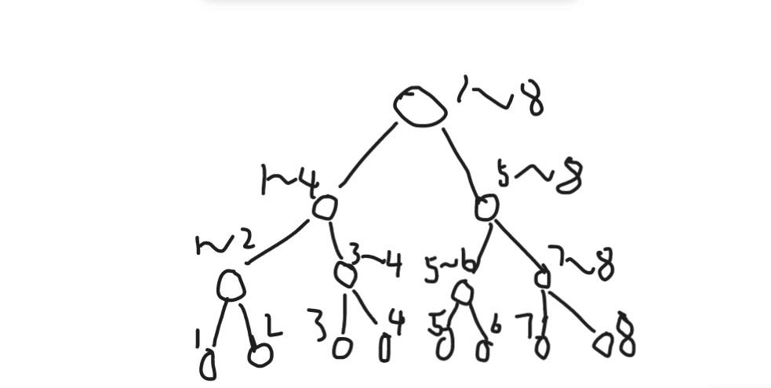

前言
sub 1
对于一个序列求区间第 k 小的数。
对于这种东西，自然得先考虑二分了。
用一个序列 A 离线下来所有的 ，定义值域区间,令 。
将在区间内的答案放入 B 序列，其余答案放入 C 序列并继续向下递归分裂原序列，直至 L=R 时返回。
这貌似就是二维的做法(?)
sub 2
考虑一种复杂度错误的方法。
将区间标上黑色，判断中有多少个黑点。记黑点个数为 x 。
-
若则答案一定会在区间内。
-
若则答案一定会在区间内。
-
否则的话，说明 x 就是我们要的答案。
可以利用树状数组来进行维护单点修改与区间查询的操作。
但是我们考虑一种极端情况，查询的时候有多个点被多次覆盖，重复的无意义的操作数量巨大，时间复杂度明显不对。
整体二分
整体二分能做什么
整体二分处理的是有以下性质的结构体：
- 询问的答案具有可二分性。
- 修改对判定答案的贡献相对独立，修改之间互不影响效果。
- 修改如果对判定答案有贡献，则贡献为一确定的与判定标准无关的值。
- 贡献满足交换律，结合律，具有可加性。
- 题目允许离线操作。
我们发现离线后整体二分处理的复杂度与序列的总长无关，只与待处理的询问序列的长度有关。
当时，求区间的第 k 小数。
序列：1 8 5 6 7 2 4 3
我们模拟二分过程：

不难发现，从刚开始我们还在的区间中，我们取中点
注意，这里的代表的是值域区间，所以我们会发现在要求区间中只有 1 个小于 4 的值。
于是我们把 k 减去 1 并删掉这一个小于 4 的数 递归到值域的右区间(因为我们处理的是第 k 小，将值域 mid 减小的话反而会使我们当前的排名变大，而当前排名本就比k大，所以递归值域的右区间)
此时我们的 ，再重复上面的做法，删掉了，此时。
再递归到 区间中，,发现只有 1 个数 7 刚好，此时，故答案为。
例题
(题面直接由洛谷copy过来)
题面
题面翻译
题目大意：
给你n个数，多次询问某段区间第k小的数。
输入格式：
第一行两个数n、m，n代表有多少个数，m代表询问数。
第二行n个数给出，不超过10^9。
接下来m行，每行三个数i,j,k，询问第i个数到第j个数中第k小的数是什么。
输出格式：
输出共m行，对每次询问的回答。
数据范围：
1<=n<=100000,1<=m<=5000。
注意：简单的做法可是过不了的。
感谢 @gjc1124646822 提供的翻译。
题目描述
English Vietnamese You are working for Macrohard company in data structures department. After failing your previous task about key insertion you were asked to write a new data structure that would be able to return quickly k-th order statistics in the array segment.
That is, given an array a[1 … n] of different integer numbers, your program must answer a series of questions Q(i, j, k) in the form: “What would be the k-th number in a[i … j] segment, if this segment was sorted?”
For example, consider the array a = (1, 5, 2, 6, 3, 7, 4). Let the question be Q(2, 5, 3). The segment a[2 … 5] is (5, 2, 6, 3). If we sort this segment, we get (2, 3, 5, 6), the third number is 5, and therefore the answer to the question is 5.
输入格式
The first line of the input contains n — the size of the array, and m — the number of questions to answer (1 ≤ n ≤ 100000, 1 ≤ m ≤ 5000).
The second line contains n different integer numbers not exceeding 10^9 by their absolute values — the array for which the answers should be given.
The following m lines contain question descriptions, each description consists of three numbers: i, j, and k (1 ≤ i ≤ j ≤ n, 1 ≤ k ≤ j - i + 1) and represents the question Q(i, j, k).
|
输出格式
|
Note : naive solution will not work!!!
完全就是上面所讲的好吗。
这里只要考虑再用树状数组维护区间中比当前数小的数的个数就好了
由于写挂了所以不贴了